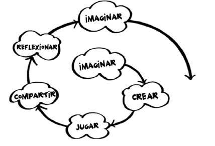
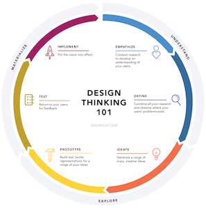

Linea TFM:
Storytelling interactivo en periodismo gamificado e inmersivo
(Creación Multimedia y Periodismo Multiplataforma)
Máster de Nuevos Medios Interactivos y Periodismo Multiplataforma
Miguel Gea , 2025/26
Metodología
Fomentar la Creatividad y la Experimentación mediante el desarrollo de un proyecto periodístico aplicando gamificación e interactividad
Objetivos:
- Relacionado con asignatura Creación Multimedia y Periodismo Multiplataforma , 3cr ECTS / 2º Semestre
- Familiarizar con conceptos de: experiencia de usuario (UX), interfaz de usuario (UI), storytelling, diseño interactivo, experiencias inmersivas y aumentadas, gamificación
- Experimentación con técnicas específicas de generación de contenidos, documentación y publicación
- Fomentar uso de herramientas para la Web y filosofía OpenSource
Metodología de Pensamiento Creativo
 Resnick nos propone una estrategia para este mundo cambiante: “el éxito se basa no solamente en lo que sabes o en cuánto sabes, sino más bien en tu habilidad para pensar y actuar creativamente” , y para ello nos propone una metodologría de espiral creativo, consultar en siguiente artículo sobre creación colectiva, crowdsourcing y conocimiento abierto y que tiene muchas similitudes con metodologías de pensamiento de diseño (design thinking) y eXperiencia de Usuario (UX)
Sandbox para practicar contenido en HTML
See the Pen ComicSorting by Miguel Gea (@mediaUX) on CodePen.
Propuestas de TFM
A. Proyecto de narrativas inmersivas / aumentadas
- Estudio de tecnologías RV/RA
- Aplicación sobre marketing / periodismo
B. Proyecto de narrativas interactivas
- Video interactivo
- Novelas Visuales
- Long-form Journalism
- Game design
C. Wordpress CMS Website
- Revistas electrónicas
- Blogs personalizados
- Landing Pages
- i-docs
Actividades comunes
- Ideación/ Planificacion: Trello / Moodboard
- Prototipado: ProtoPie / Proto.io
- Usar librerías HTML/CSS/JS + sandbox
- Documentación y publicación: Github
- Licencias CC y filosofía Open Source
CASO TFM: Storytelling en Realidad aumentada
-
_
_
La fórmula Secreta (Patricia Jarpa, 2020)
Una estrategia de marketing en realidad aumentada
Cubo interactivo Realidad Aumentada
Cubo con marcas para mostrar historia con Realidad Aumentada (AR.js)
Realidad Aumentada
Prototipo interactivo (sobre móvil)
Metodología y documentación

Caso TFM:
Periodismo Inmersivo
.
.
Lorca #360 (Mariela Luján, 2018)
Ruta Inmersiva 360º con Federico García Lorca
Ruta inmersiva 360º
Repercusiones mediáticas


CASO TFM Storytelling
y Gamificación
.
.
.
Novela Visual (storytelling interactivo)
Repositorio de proyectos (storytelling)
- Repositorio en Github
- Mejores historias y novelas visuales
- Filosofía CC creative commons
Bibliografía
- Creación multimedia y Periodismo Multiplataforma website
- Carrol H. Millner (2014): Digital Storytelling: A Creator's Guide to Interactive Storytelling 4ª ed. Routledge
- Crawford, Chris (2013) On Interactive Storytelling, Second Edition, New Riders 2013
- Schell, J. (2015). The Art of Game Design, CRC Press
presentación realizada con reveal.js
disponible en https://mgea.github.io/storytelling-tfm
 miguel gea, nov 2022
miguel gea, nov 2022
miguel gea, nov 2023